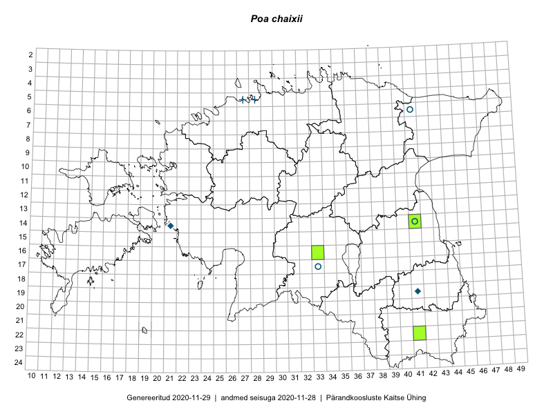

Poa chaixii — parginurmikas
Poaceae :: Poa chaixii Vill. (15)

Kaart põhineb 15 kirjel:
herbaareksemplare 15
Taime kaasaegsed ja ajaloolised leiukohad asuvad 9 ruudus.
Tingmärgid ja ruutude arvud periooditi (U1 / V2 )
█ 2006–2020 (3/–)
◆/◇ 1971–2005 (2/0)
○ 1921–1970 (3/0)
+ kuni 1920 (2/0)
× hävinud (–/0)
? kaheldav (–/0)
| Ruut | Leidja(d) | Leiuaeg | Kirje |
|---|---|---|---|
| 05-27 | R. Lehbert | 1919-08-16 | TAM0081123: Poa chaixii Vill. |
| 19-41 | Linda Viljasoo | 1983-06-09 | TAA0107134: Poa chaixii Vill. |
| 19-41 | Linda Viljasoo | 1983-06-09 | TAA0107135: Poa chaixii Vill. |
| 19-41 | Linda Viljasoo | 1983-06-09 | TAA0107136: Poa chaixii Vill. |
| 19-41 | Linda Viljasoo | 1983-06-09 | TAA0107137: Poa chaixii Vill. |
| 19-41 | Linda Viljasoo | 1983-06-09 | TAA0107138: Poa chaixii Vill. |
| 19-41 | Linda Viljasoo | 1983-06-09 | TAA0107139: Poa chaixii Vill. |
| 06-41 | Linda Viljasoo | 1962-06-14 | TAA0107140: Poa chaixii Vill. |
| 14-41 | M. Kask | 1967-06-12 | TAA0107141: Poa chaixii Vill. |
| 17-33 | Gustav Vilbaste | 1948-06-19 | TAA0107142: Poa chaixii Vill. |
| 14-21 | Tiina Ksenofontova | 1986-08-03 | TAA0107143: Poa chaixii Vill. |
| 14-41 | Peedu Saar, Ott Luuk | 2015-06-21 | TAA0116412: Poa chaixii Vill. |
| 05-28 | G. Pahnsch | 1879-07-05 | TAM0118067: Poa chaixii Vill. |
| 22-41 | Elle Rajandu, Karin Kikas | 2015-05-25 | TAA0143078: Poa chaixii Vill. |
| 16-33 | Thea Kull, Mari Reitalu | 2019-08-27 | TAA0148093: Poa chaixii Vill. |
Ruutude arv uue atlase andmekogu järgi. Muuhulgas arvestab vanemat herbaariumi, 2005. aasta atlase välitöölehtedelt uuesti digitaliseeritud andmeid jne. Uue atlase andmekogust pärinevad andmed on kaardile kantud siniste sümbolitega.↩︎
Ruutude arv 2005. aasta atlase (Kukk, T., Kull, T., Eesti taimede levikuatlas. Eesti Maaülikool, Põllumajandus- ja Keskkonnainstituut, Tartu, 2005) järgi. Andmeallikana on kasutatud levik.exe programmi, kus igas ruudus on registreeritud vaid uusim leid. Seetõttu on vanemate perioodide kohta andmed puudulikud. Kasutatud levik.exe andmestikus leidub mõningaid kõrvalekaldeid atlase trükis ilmunud versioonist, sagedamini tarnade ja käpaliste seas. Lisaks leidub selles andmestikus valik liike (peamiselt väheste leidudega tulnuktaimed), mille kaarte trükis ei avaldatud. Vana atlase andmed ruutudest, milles ei ole uue atlase andmekogus leide enne 2006. aastat, on kaardil esitatud punaste sümbolitega. Vana atlase andmetel hävinud ja kaheldavaid leiukohti pole hilisemate (taas)leidude põhjal korrigeeritud.↩︎